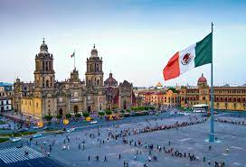

Con 26 puntos declarados Patrimonio Mundial por la UNESCO, encantadores pueblos coloniales y docenas de apasionantes ciudades, hay mucho que explorar en este país de 109 millones de habitantes. Fuera de las ciudades, las impresionantes playas del Pacífico, los inhóspitos desiertos, los pantanos de mangle y las pozas naturales para nadar te proporcionan todo lo necesario para pasar unas vacaciones relajantes, románticas o de aventuras. La ciudad de México, cautivadora, cosmopolita y caótica, así como sus 32 estados, ofrecen una multitud de experiencias, desde relajadas y tranquilas, hasta animadas y con descarga de adrenalina incluida.